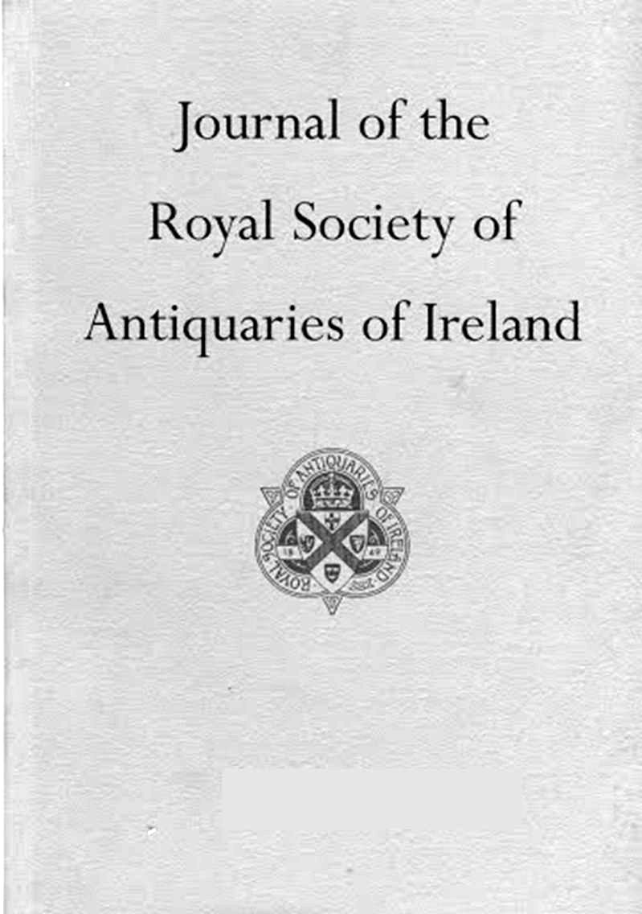

Sources
Further reading
Maps, reports and articles used in putting this site together.
- Dublin City Council planning application 4423/19, 27–29 New Row South: flood risk assessment (JBA Consulting), engineering report (J.J. Campbell & Associates), city archaeologist and planner’s reports
- An Bord Pleanála case 306725: River Poddle Flood Alleviation Scheme, EIAR and planning documents
- EIAR Chapter 11: archaeology, architecture and cultural heritage (306725)
- Dublin City Council: presentation on the River Poddle Flood Alleviation Scheme
- Excavations.ie: Tenters Blackpitts, Dublin 8 (2007 and 2016)
- UCD Digital Library: historic maps of Dublin
- South Dublin County Council: River Poddle Flood Alleviation Scheme
- Dublin.ie: The Poddle and Dublin’s hidden rivers
- Arran Henderson: The best Poddle river
- Eastern CFRAM study: Poddle options report
- Ask About Ireland: Griffith’s Valuation
- Wikipedia: River Poddle
- River Poddle Flood Alleviation Scheme
- Henry de Loundres, Archbishop of Dublin (grant of Timothan, 1216)
- National Inventory of Architectural Heritage: Firhouse Weir, reg. no. 11215019
- Excavations.ie: The Weir, Firhouse, 2001 (Shane Delaney, IAC, licence 01E0858)
- Weston St John Joyce, The Neighbourhood of Dublin (1912): the old city water supply
- William Handcock, The History and Antiquities of Tallaght: the River Dodder and the city weir
- Crumlin Walkinstown History: Balrothery (Firhouse) Weir
- Our Irish Heritage: Balrothery Weir, part of Tallaght’s waterways history
- South Dublin County Council: Firhouse Weir
- William Handcock, The History and Antiquities of Tallaght: the church and Talbot’s Leap
- South Dublin County Council: history of Tallaght
- Library Ireland: Talbot family genealogy (Belgard)
- Wikipedia: Henry Barry, 4th Baron Barry of Santry
- St Patrick’s Cathedral: Saint Patrick and the cathedral
- Wikipedia: St Patrick’s Cathedral, Dublin
- Arran Henderson: origins of Saint Patrick’s Cathedral, the chapel on the island
Photo credits
Photographs from Wikimedia Commons, shown in black and white. Licences as stated; adapted (converted to black and white and resized).
- Firhouse Weir, 2021: Tdr112, CC BY-SA 4.0 (licence)
- Footbridge at Firhouse: Deitel55, CC BY-SA 3.0 (licence)
- St Patrick’s Cathedral from the park: Clara.munecas, CC BY-SA 4.0 (licence)
- West front and Minot’s Tower: Andreas F. Borchert, CC BY-SA 4.0 (licence)
- The nave: Diliff, CC BY-SA 3.0 (licence)
- The well stone: Wknight94, CC BY-SA 3.0 (licence)
- The well plaque: Archaeomoonwalker, CC0 (licence)
- The cathedral in 1814: James Whitelaw, Public domain
- Lawrence Collection photograph: William Lawrence (Lawrence Collection), Public domain


.jpg){kind=link}


Printed sources
- Rev. Myles V. Ronan, “The Poddle River and its Branches”, Journal of the Royal Society of Antiquaries of Ireland, 6th series, vol. 17, no. 1 (1927), pp. 39–46
- Greater Dublin Strategic Drainage Study (2005)
- H. F. Berry, “The water supply of ancient Dublin”, Journal of the Royal Society of Antiquaries of Ireland 21 (1891), pp. 557–73
- H. F. Berry, “Notes on an unpublished MS inquisition (AD 1258) relating to the Dublin city watercourse”, Proceedings of the Royal Irish Academy 24 (1902–4), pp. 39–46
- Weston St John Joyce, The Neighbourhood of Dublin (1912; 1988 edition), pp. 452–3
- William Domville Handcock, The History and Antiquities of Tallaght (1877; 2nd edition 1899)
- J. Hegarty, “The Dodder Valley”, Dublin Historical Record 2, no. 2 (1939), p. 62
- B. Mac Giolla Phádraig, History of Terenure (1954)
- Simpson (1997), as cited in the flood scheme’s EIAR Chapter 11, pp. 22–5
- Joseph W. Doyle, Ten Dozen Waters: The Rivers and Streams of County Dublin (2013; 2018 edition), as summarised in Wikipedia’s River Poddle article
- Poddle Flood Alleviation Scheme, Environmental Impact Assessment Report, Non-Technical Summary
